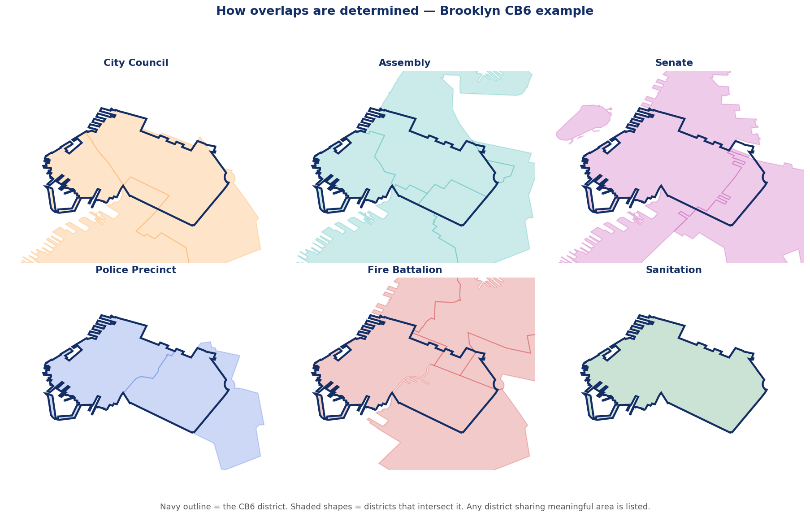

Every overlap in this directory is computed from official NYC boundary data, not entered by hand. Here is exactly how, and which layers are included.
New York City is divided into many different district systems that do not line up with each other. A community board is one such district. Sitting on top of it are City Council districts, two kinds of state legislative districts, a congressional district, a police precinct, a school district, a fire battalion, and a sanitation district — each drawn by a different agency for a different purpose, with different lines.
For each of the 59 community boards, this directory takes the board’s shape and asks, for every other district system: which of your districts share area with this board? Any district that meaningfully overlaps is listed as representing that board.
Each board and borough page groups its representatives into these systems:
| Layer | What it is | Source boundary |
|---|---|---|
| Community Board | The district itself | DCP Community Districts |
| City Council | Citywide legislature | City Council Districts |
| State Assembly | NY State lower house | State Assembly Districts |
| State Senate | NY State upper house | State Senate Districts |
| U.S. Congress | Federal House seat | Congressional Districts |
| Police Precinct | NYPD patrol area | Police Precincts |
| School District | NYC Public Schools | School Districts |
| Fire Battalion | FDNY battalion area | Fire Battalions |
| Sanitation District | DSNY collection district | DSNY Sections |
Borough President and District Attorney are assigned by borough. Mayor, Public Advocate, Comptroller, Governor, State Comptroller, Attorney General, and the two U.S. Senators represent everyone and appear on every page.
Each panel below shows the Brooklyn CB6 district as a navy outline, with the districts of one system shaded behind it. Wherever a shaded shape shares meaningful area with the outline, that district is listed on the page.

The same board overlaps a different number of districts in each system — two council districts, three assembly districts, four fire battalions, one sanitation district, and so on. That is why no single district line can stand in for “who represents this neighborhood.”
Because this is geometric, a board near a borough edge can list a district from the neighboring borough where the lines cross. That is correct: the directory answers “who has authority over any part of this area,” not “who is headquartered here.”
District lines feel like facts. They are decisions. Council, Assembly, Senate, congressional, police, fire, school, and sanitation maps were each drawn separately, at different times, for different goals, and they cut across one another constantly. A single block can sit in one council district, a different assembly district, a third senate district, and a fourth precinct. Laying all of them over one community board at once makes that visible, and makes it easy to see which of these lines are shared, reused, or contestable.
Open the directory →